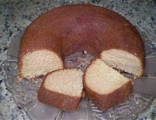

Receita de bolo

Modo de preparo
- Bata as claras em neve e reserve.
- Misture as gemas, a margarina e o açúcar até obter uma massa homogênea.
- Acrescente o leite e a farinha de trigo aos poucos, sem parar de bater.
- Por último, adicione as claras em neve e o fermento.
- Despeje a massa em uma forma grande de furo central untada e enfarinhada.
- Asse em forno médio (180 °C), preaquecido, por aproximadamente 40 minutos ou até que, ao furar o bolo com um garfo, este saia limpo
Igredientes
- 2 xícaras de açucar
- 3 xícaras de farinha de trigo
- 4 colher de margarina
- 3 ovos
- 1 e 1/2 xícara bem cheia de fermento em pó
Esse bolo é perfeito para acompanhar um café quentinho! Se quiser, você pode incrementar com uma cobertura de brigadeiro, beijinho ou leite condensado para deixá-lo ainda mais saboroso.